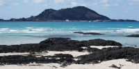
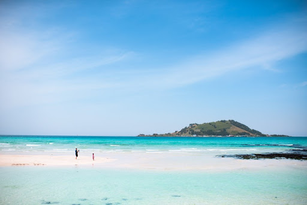
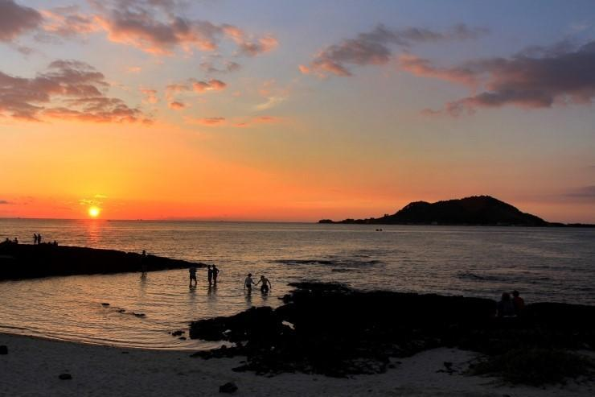
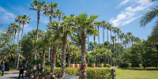
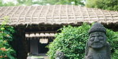
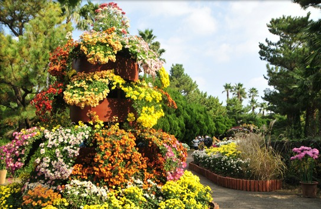
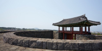
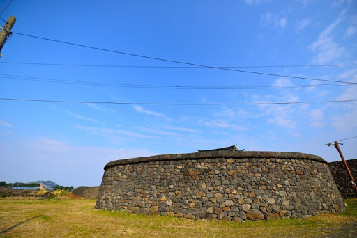
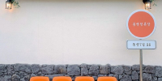
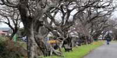

PLANS
Jeju, South Korea
협재 해변 근처 힐링 루트
1 day- PLAN
- 아름다운 협재 해변을 중심으로 둘러 보는 힐링 코스.
-
타입
solo couple friends family family with baby
-
예상경비
$$
-
난이도
normal
- 위치 easy
- 교통 easy
- 소통 normal
- 체력 hard
-
1
협재해수욕장
제주도 랜드마크 협재해변
하얀 모래와 에메랄드 빛 바다, 낮은 현무암이 곳곳에 펼쳐진 제주도 랜드마크 중 하나이다. 수심이 얕아 여름에는 해수욕을 하기에 좋다. 제주도 특유의 색감을 담은 사진을 남기기에 좋은 곳이다.
https:/soundsgood-store.com
 5min
5min
협재 해수욕장 혹은 금능 해수욕장에 차를 주차해 두면 편리하다.
한림 공원으로 가는 길에
올레길 14코스를 걸으며
바다 풍경을 만끽해보자. -
2
한림공원
가족과 함께 하기 좋은 자연 테마 공원
12,000 KRW야자수길, 식물원, 용암동굴, 제주 석재원, 민속마을 등 다양한 제주의 풍경을 한 곳에서 볼 수 있는 한림공원. 넉넉히 2시간이면 공원을 모두 둘러볼 수 있다. 월마다 다른 테마의 축제가 열린다. 이용 시간은 3월~8월 8:30~5:30, 9월~10월 8:30~5:00, 11월~2월 9:00~4:30.
https://www.hallimpark.com/blank-50 5min
5min
올레길 14코스를 따라 해안선
드라이브를 즐길 수 있다. -
3
콩창고
한림동 콩요리 맛집
10,000 KRW국산 콩을 사용한 콩, 두부요리 그리고 맛있는 밑반찬으로 소문난 맛집. 합리적인 가격으로 한 끼를 든든하게 해결할 수 있다. 오전 10시 부터 오후 8시 까지 열려 있다.
https://kongchanggo.tenclove.com/index.jsp?menu_seq=&page_seq=800&menu_rank=0&menu_rank=1&page_type=1&mode=1&site_cate_seq=222&viewSeq= 1min
1min
명월성으로 향하는 길에서는 낮은 돌담과 각종 밭, 작은 집 등 동명리의 소박한 풍경을 볼 수 있다.
-
4
명월성
이름은 명월성이지만 동명리에 위치해 있다. 제주도 기념물 제 29호. 명월성에는 동쪽, 남쪽, 서쪽에 각각 성문이 있었다고 한다. 성안에 있던 샘, 창고, 객사등은 현재는 남아있지 않지만 가지런히 세워진 돌담은 여전히 남아있다. 성루 위로 올라가 볼 수 있으며, 날씨가 좋은 날에는 한림항과 비양도를 볼 수 있다.

1min
-
5
동명정류장
명월성 근처 힘든 다리를 쉬어가기 좋은 카페.
감귤색으로 포인트를 준 깔끔한 인테리어가 돋보이는 카페. 내부 곳곳에 사진을 남기기 좋은 공간들이 있다. 영업시간 11:00~18:00, 매주 목요일 휴무.
http://instagram.com/jeju_dm
5min
-
6
명월리
팽나무 군락지로 유명한 마을
도시화된 제주가 아니라 소박한 제주 그대로의 느낌을 원한다면 꼭 방문해 보자. 명월리 사무소에서 출발해 팽나무 군락지, 작은 골목 골목을 천천히 걷다 보면 마음속 까지 평화로워 지는 것 같다.
https://blog.naver.com/blue0112/221807987736